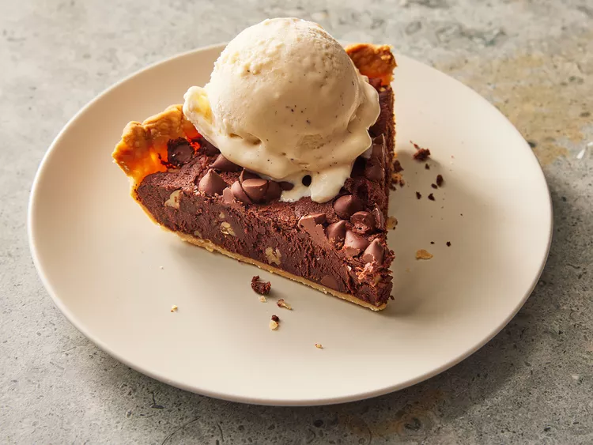

Brownie Pie

Description
Uhhh idk what this is and it doesn't have a description
Ingredients
- Flour
- Sugar
- Salt
- Butter
- Eggs
- Vanilla Extract
- Cocoa Powder
- Espresso Granules
- Chocolate Chips
Steps
- For the crust, combine flour, sugar, and teaspoon salt in a food processor and pulse about 3 times until combined. Scatter cold butter over flour mixture in food processor. Pulse about 6 times until butter resembles pea-sized pieces. Drizzle 3 tablespoons water over butter mixture. Pulse about 6 times until couscous-like beads of dough form, adding 1 more tablespoon ice water if needed.
- Transfer dough to a work surface, and press into a single mass. Shape and flatten dough into a disk. Wrap in plastic wrap, and chill for at least 1 hour or up to 2 days.
- Unwrap dough and place on a lightly floured work surface. Let dough sit at room temperature for 10 minutes to soften. Dust top of dough with flour. Using a lightly floured rolling pin, roll disk into a 12-inch circle. Place in a 9-inch pie plate, pressing into bottom and up sides of pie plate. Fold edges under, and crimp as desired. Cover with plastic wrap, and freeze for 30 minutes.
- Preheat the oven to 350 degrees F (175 degrees C). Place parchment paper over dough in pie plate; fill with pie weights or dried beans.
- Bake in the preheated oven until crust is starting to set, about 15 minutes. Carefully remove pie plate from oven and take off parchment paper and pie weights. Return pie plate to oven, and bake until pie crust is light golden brown, 8 to 12 minutes. Transfer to a wire rack; let cool to room temperature, about 20 minutes.
- Whisk together melted butter, sugar, eggs, egg yolk, canola oil, and vanilla extract in a bowl until blended and smooth. Whisk in cocoa, flour, instant espresso, and salt just until combined. Stir in nuts and 1/4 cup chocolate chips. Scrape mixture into cooled crust, and smooth top with a small offset spatula. Sprinkle remaining 1/4 cup chocolate chips on top of the pie.
- Bake in the preheated oven until a toothpick inserted in the center comes out clean, 30 to 35 minutes, covering the crust with aluminum foil if it gets too dark. Let cool 20 minutes before serving.